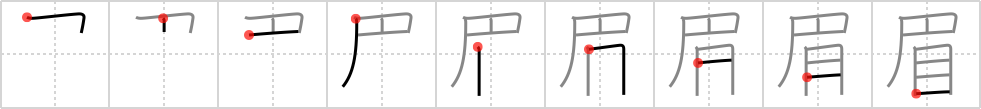

眉
← →
eyebrow

Reading:
On-Yomi: ビ、ミ — Kun-Yomi: まゆ
Heisig story:
The flag here has an extra vertical stroke in it. Think of it as an eyebrow pencil stuck in the eye.
Koohii stories:
1) [astridtops] 2-12-2006(79): The eyebrows hover over the eyes like a divided flag.
2) [brose] 29-3-2007(18): Pictograph: opera glasses over eyes ビ ミ まゆ.
3) [dancingblade] 19-8-2010(16): (+astridtops) Eyebrows are like flags that are raised above your eyes. The flag is divided because otherwise that would be a monobrow.
4) [jabberwockychortles] 27-3-2010(9): The venetian mask with stick covers the eyes but I can recognize his bushy eyebrows above it.
5) [kanjihito] 9-3-2012(3): She painted Japanese flags above her eyes as eyebrows.